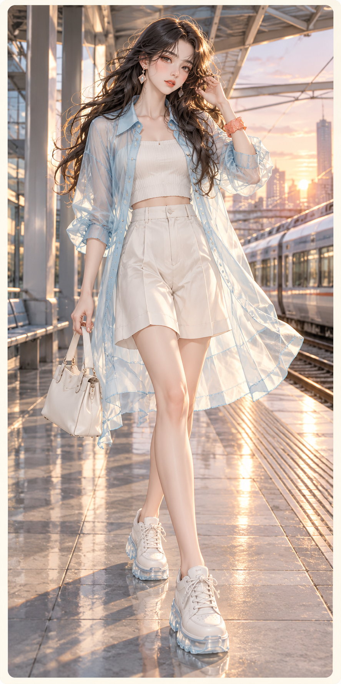
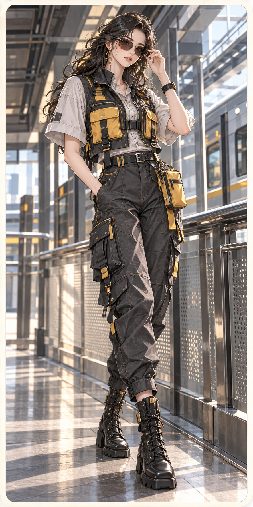
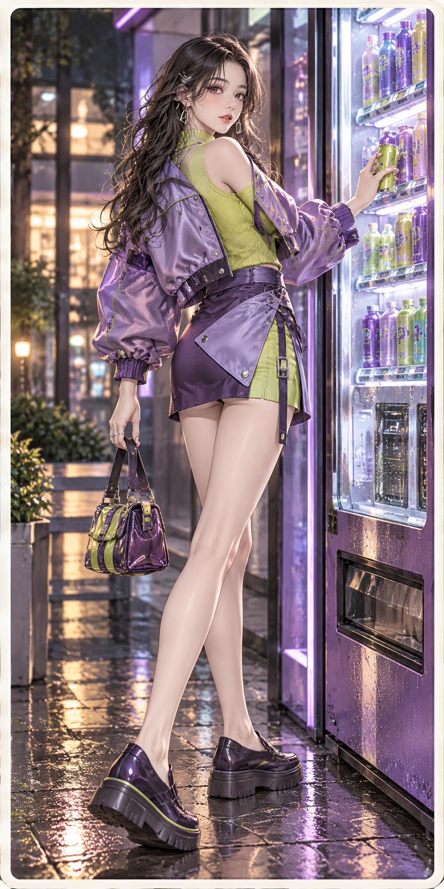
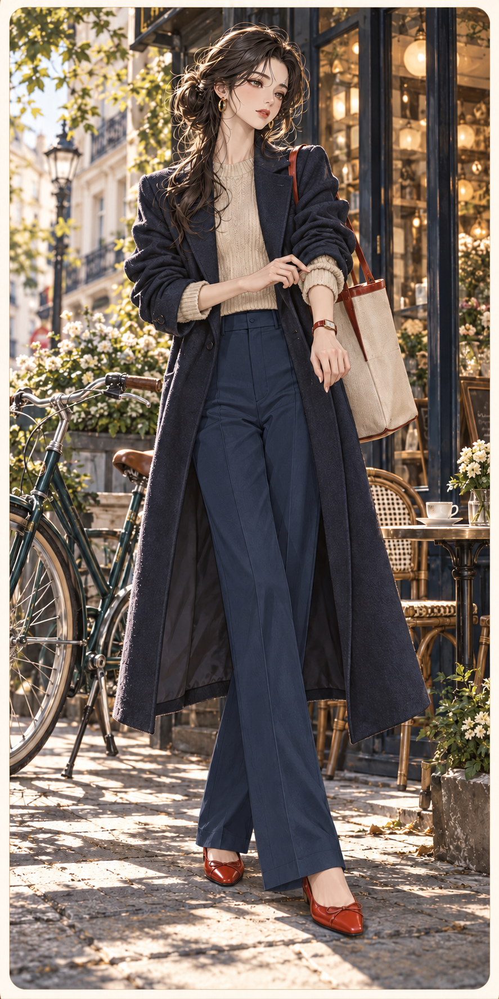
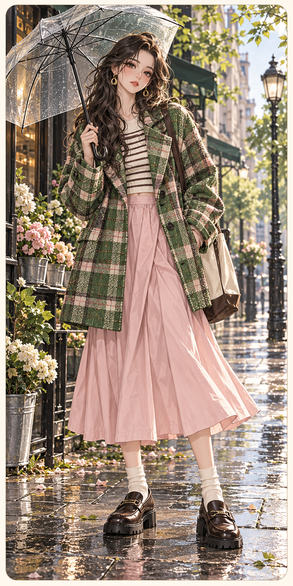
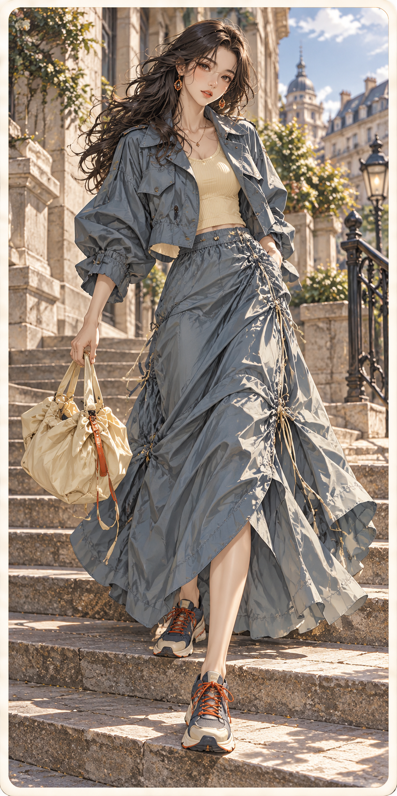
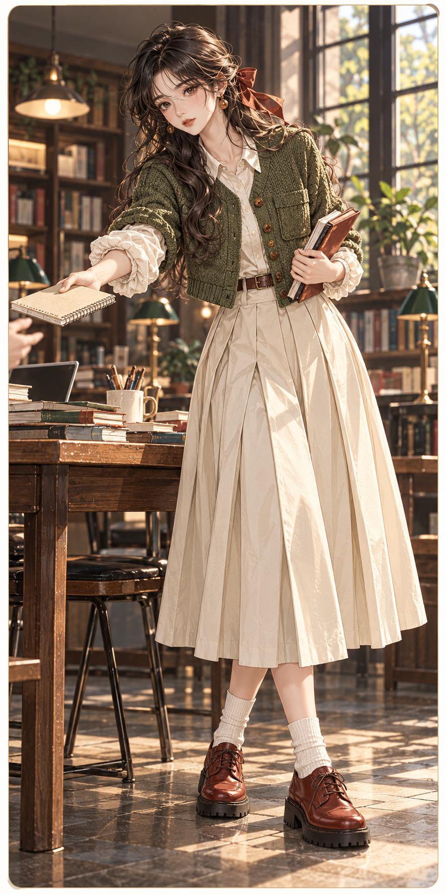
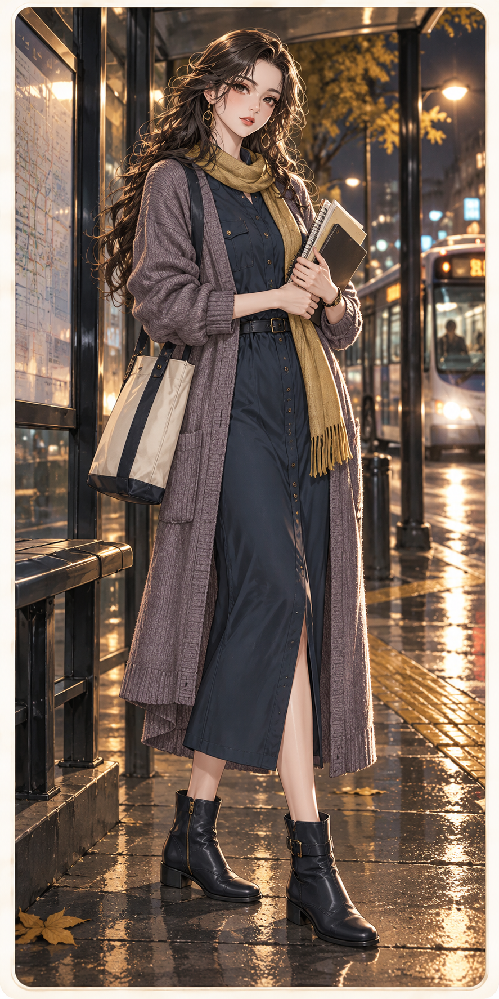

FASHION ATLAS / CARD ART / LEVELS 04—06第 4—6 关 · 卡面设计
统一半写实动漫插画、米白细边框；每关三套不同轮廓、面料与场景。点击卡面查看原尺寸 PNG。
返回双语阅读版 ↗
S04 Cyber Y2K · 复古未来

C04-A薄膜晨光 / Membrane Morning
半透明长罩衫／窄背心／宽短裤；外长内短
冰蓝 云白 珊瑚
薄膜感欧根纱不等于塑料，内搭棉哑光

C04-B模块穿行 / Modular Transit
短机能马甲／宽肩衬衫／锥形工装裤
石墨 工业黄 浅灰
棉尼龙颗粒、哑金属扣与轻微涂层差异

C04-C数字汽水 / Digital Soda
圆肩短夹克／不对称短裙；紧凑几何
泡泡紫 青柠 墨紫
细罗纹、亮面小片与哑面挺布
S05 Scandi · 北欧城市日常

C05-A精确的早晨 / A Precise Morning
长直大衣／短针织／直裤；细长而不紧
墨蓝 燕麦 番茄
细羊毛直面、干爽棉与小面积红色皮

C05-B雨前大格纹 / Checks Before Rain
盒型大外套／中长裙；大色块与留白
青草绿 淡粉 棕黑
粗格毛呢与平整轻棉，不统一磨成柔光

C05-C活动的褶线 / Pleats in Motion
短风衣／抽绳及踝裙；轻技术感
钢蓝 奶黄 橘红
技术斜纹、细罗纹与纸感棉
S06 Dark Academia 暗黑学院
C06-A借阅期限 / The Due Date
宽西装／窄针织／宽裤；不收腰直线
烟棕 墨蓝 纸白
细格精纺、平针与磨旧皮

C06-B共用书桌 / The Shared Desk
短针织夹克／衬衫／宽箱褶中裙
苔绿 象牙 锈红
毛粒针织与干棉褶量

C06-C夜课归途 / After the Evening Class
衬衫式直裙／长针织层；简洁纵线
墨蓝 灰紫 芥黄
干爽斜纹、细绒针织与平皮